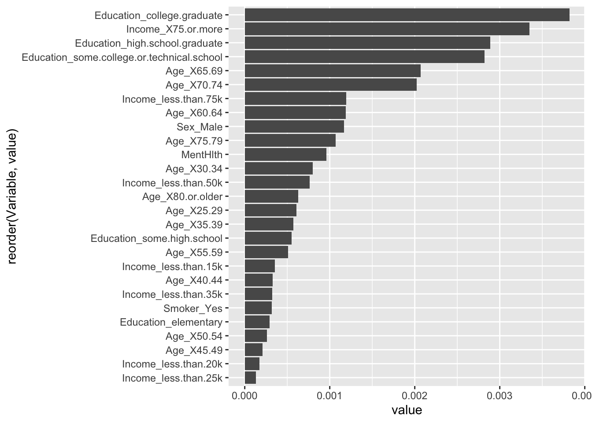

Modeling Analysis of the Diabetes Health Indicators Dataset
Annie DiFrank
ST558 Final Project, December 5, 2024
Introduction
In this project, we will be exploring the Diabetes Health Indicators Dataset (available on Kaggle).
The data analyzed here was collected via a health-related telephone survey conducted by the CDC’s Behavioral Risk Factor Surveillance System (BRFSS) in 2015. We are interested in finding the best model to predict the occurance of prediabetes or diabetes (a binary variable, Diabetes_binary). That is, we are interested in what risk factors are the most predictive of diabetes, and can we use this subset of variables to classify disease occurrence?
There are already well-known medical factors (mainly related to diet) that can increase risk of diabetes, so for this project I am going to focus on some factors that may have less-known associations; mental health, sex, age, education, income, and smoker status.
There are many ways to fit a model to a dataset. Here, we split our data into training and test sets and use cross validation to improve the variability of the model performance from one data set to the next. We will look at classification tree modeling and random forest modeling and pick the best model from our options.
With a well-fit model, we could potentially create a risk stratification panel for individuals that have not been diagnosed with prediabetes/diabetes.
In this file, we will perform perform our model split and fit the data to multiple models with cross validation.
Rows: 253680 Columns: 22
── Column specification ────────────────────────────────────────────────────────
Delimiter: ","
dbl (22): Diabetes_binary, HighBP, HighChol, CholCheck, BMI, Smoker, Stroke,...
ℹ Use `spec()` to retrieve the full column specification for this data.
ℹ Specify the column types or set `show_col_types = FALSE` to quiet this message.
diabetes <- diabetes %>%mutate(Diabetes_binary =factor(Diabetes_binary, levels =c(0, 1), labels =c("No", "Yes")),Smoker =factor(Smoker, levels =c(0, 1), labels =c("No", "Yes")),Sex =factor(Sex, levels =c(0, 1), labels =c("Female", "Male")),Age =factor(Age, levels =c(1,2,3,4,5,6,7,8,9,10,11,12,13), labels =c("18-24","25-29","30-34","35-39","40-44","45-49","50-54","55-59","60-64","65-69","70-74","75-79","80 or older")),Education =factor(Education, levels =c(1,2,3,4,5,6), labels =c("never attended school or only kindergarten","elementary","some high school","high school graduate","some college or technical school","college graduate")),Income =factor(Income, levels =c(1,2,3,4,5,6,7,8), labels =c("less than 10k","less than 15k", "less than 20k", "less than 25k","less than 35k","less than 50k","less than 75k","75 or more")) ) %>%select(c(Diabetes_binary, Smoker, Sex, Age, Education, Income, MentHlth))
Splitting the Data
Here, we will use the tidymodels frame work to split our data into training and test sets, with a 0.7/0.3 proportion. Luckily we have many many observations, so we shouldn’t have to worry much about too little data being in the training or test split.
# A tibble: 177,576 × 7
Diabetes_binary Smoker Sex Age Education Income MentHlth
<fct> <fct> <fct> <fct> <fct> <fct> <dbl>
1 No No Male 40-44 college graduate 75 or… 0
2 No No Female 35-39 college graduate 75 or… 0
3 No Yes Female 50-54 some college or technica… 75 or… 0
4 No Yes Male 70-74 high school graduate less … 0
5 No No Female 65-69 college graduate less … 0
6 No No Male 50-54 some college or technica… 75 or… 3
7 No No Female 25-29 college graduate 75 or… 2
8 No Yes Male 50-54 college graduate 75 or… 2
9 No Yes Female 45-49 some college or technica… less … 0
10 Yes No Female 65-69 college graduate 75 or… 0
# ℹ 177,566 more rows
Cross Validation Folding
When we split our data, it is randomly split intro training/test. There are chances we may get a weird split by chance, which can make metric evaluation a somewhat variable measurement. Using cross validation can create a less variable measurement of our metric that uses all of our data. With cross validation, no predictions used in the value of the metric were found on data that were used to train that model! Here, we will perform a 5-fold cross validation.
diab_cv_folds <-vfold_cv(diab_train, 5)
Classification Tree Modeling
Tree models are nonlinear supervised learning models and can be more flexible than linear models. Classification trees, as opposed to regression trees, are used when the response variable is categorical (or binary). With a tree model, we split the predictor space into regions. We than make our prediction based on which ‘bin’ an observation ends up in. The most prevalent class in a bin/region is used as the prediction at that split. These models are easy to interpret, and there are no statistical assumptions necessary to get the fit. Additionally, it has built in variable selection. The con of trees is that small changes in the data can vastly change the tree due to the lack of ‘sharing’ information with nearby data points due to splitting at bins, and there is no optimal algorithm for choosing splits. We also need to use CV to prune the tree/ figure out the optimal size of the tree (a bigger tree may be better, but the computational cost is large).
#Selecting the best model's tuning parameters tree_best_param<-select_best(tree_fits)
Warning in select_best(tree_fits): No value of `metric` was given;
"mn_log_loss" will be used.
#Finalize the workflow with the best parameters tree_final_wkf <- tree_wkf %>%finalize_workflow(tree_best_param)#Now that we've set up how to fit the final model, will do it on the split object tree_final_fit <- tree_final_wkf %>%last_fit(diab_split, metrics =metric_set(accuracy, mn_log_loss))tree_final_fit %>%collect_metrics()
It looks like the biggest variables effecting our model are related to income, mental health, and age. I suspect that income has such a big play as greater income means greater access to healthy foods, health care, and maybe could correlate to be a better work-life balance (access to adequate sleep, exercise, etc.)
Random Forest Modeling
Random forest models are an ensemble method, meaning they combine many models together and fit multiple different tree models to pseudo replicates of the data set and then combine the outcomes. This method often uses bootstrapping to get multiple models to fit on. This can decrease the variance over an individual tree fit. As mentioned prior, with a basic classification or regression tree model, a branch/split we get can look vastly different from one tree to the next (from one dataset to the next, splits may look very different). Averaging across multiple trees, getting the variance of an average y, improves consistency.
Random forest models use bagging (bootstrap aggregation) to create many bootstrap samples, average the bootstrap statistics, and create a bootstrap distribution that mimics the sampling distribution. We randomly select the predictors to use at each split, which decreases correlation between trees. We fit trees to each resample and find predicted y for each, and for classification trees, use the majority vote of the predictions (most common prediction made by all bootstrap trees).
Averaging many trees can greatly improve prediction, but comes at a loss of interpretability as opposed to normal classification trees.
In our model, we will tune on the number of predictors that each split should use. Using fewer predictors at each split will reduce the variance in each tree, but may increase the bias. Using more will reduce bias, but may increase variance and potentially lead to overfitting.
#Using the same recipe as our previous model rf_spec <-rand_forest(mtry=tune()) %>%set_engine("ranger", importance ="permutation") %>%set_mode("classification")#Creating workflow rf_wkf <-workflow() %>%add_recipe(tree_rec) %>%add_model(rf_spec)#Tuning mtry across 5 levels rf_grid <-grid_regular(mtry(range =c(3,6)), levels =2)#Fitting to our CV folds rf_ft <- rf_wkf %>%tune_grid(resamples = diab_cv_folds,grid = rf_grid,metrics =metric_set(accuracy, mn_log_loss)) #this took about 20 min to runrf_ft %>%collect_metrics() %>%filter(.metric =="mn_log_loss")
rf_final_wkf <- rf_wkf %>%finalize_workflow(rf_best_param)#refit on the entire training set using this parameter rf_final_fit <- rf_final_wkf %>%last_fit(diab_split, metrics =metric_set(accuracy, mn_log_loss))rf_final_fit %>%collect_metrics()
Extracting and our final random forest tree model and examining the variable importance plot:
#extract the final model and plot rf_final_model <-extract_fit_engine(rf_final_fit)#VIPimpor_data<-as.data.frame(rf_final_model$variable.importance) %>%rownames_to_column("Variable") %>%rename(value ="rf_final_model$variable.importance") %>%arrange(desc(value)) ggplot(impor_data, aes(x =reorder(Variable, value), y = value)) +geom_bar(stat ="identity") +coord_flip()

Final Model Selection
Here we will compare our best model from the random forest method and the classification tree method on the test set to declare an overall best model.
Our best model using a classification tree had a mean log loss of 0.380 with a tree depth of 15 and cost complexity 1e-10, and declared incoming being greater than $75,000 annually has the most important predictor in the model.
Our best model using a random forest tree had a mean log loss of 0.371 with mtry = 6 and declared being a college graduate (category of the Education variable) having the highest importance as a predictor, with income greater than $75,000 the second most important.
Our overall best model, determined via the mean log loss metric, is the random forest tree model.